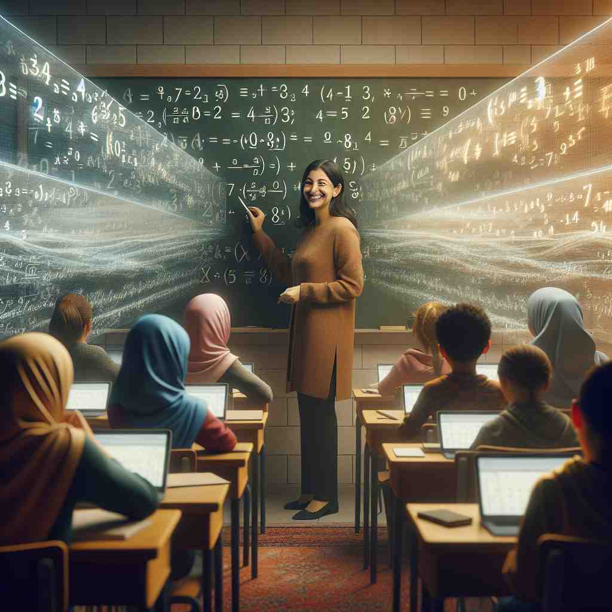

💬 The store displays the latest smartphone series with advanced features.

💬 The teacher is explaining a series of lessons in math to her students.
💬 In nature, there is a series of steps for a plant to grow.
🔈 ['sɪəriːz][-rɪz]
🗝️ n. a number of similar or related things coming one after another
🖼️ 在一个古老的书店里，一位顾客站在摆满书的架子前，目光扫过一排排有序排列的书籍。这些书籍按照出版日期依次排放，展示了“series”这个词所代表的连续的、相互关联的事物。
🔍 想象'series'是一条线，上面串着许多相似或相关的珠子。这些珠子可以是事件、作品、比赛、电子元件或数字，它们按照某种顺序或规律排列。这个串珠子的形象可以帮助你联想'series'的各种用法，使得记忆和理解更加容易。
💬 The store displays the latest smartphone series with advanced features.
💬 The teacher is explaining a series of lessons in math to her students.
💬 In nature, there is a series of steps for a plant to grow.
🌳 来源于拉丁词根 "seri-"，意为 "连贯的、一连串"，加上名词结尾 "-es"，表示一个系列或连续的事物。
💡 记住 "series" 可以联想为 "一连串的事件或节目"。通过想象电视连续剧一集接一集，容易记住其表示连续的含义。
🗝️ n. a set of books, movies, or TV shows involving the same characters or topics
🖼️ 在一个温馨的客厅里，一家人正聚在一起看电视。他们观看的是一部受欢迎的电视剧，情节环环相扣，角色熟悉而亲切，这正体现了“series”作为包含相同角色或主题的一系列书籍、电影或电视节目的含义。
💬 She's reading the Harry Potter series for the third time.
❓ 多个相关的作品按顺序排列
🗝️ n. a set of games played to decide a championship
🖼️ 在一座熙熙攘攘的体育馆中，观众们屏息期待。比赛中，两个球队正进行着关键的系列赛（series）决战。这一个系列的游戏将决定本赛季的冠军归属，激动人心的比分反映了“series”作为决定锦标赛的一组比赛的意义。
💬 The baseball team won the World Series.
❓ 多场比赛按顺序进行
🗝️ n. a group of electrical devices connected in a circuit
🖼️ 在一间安静的物理实验室里，实验台上放着一个复杂的电路板。电路由几个电子元件组成，它们依次连接，显示了“series”在电学中作为一组连接在一个电路中的电器装置的含义。
💬 The Christmas lights are wired in series.
❓ 多个电子元件按特定顺序连接
🗝️ n. a mathematical sequence of numbers following a pattern
🖼️ 在一个明亮的数学教室中，老师在黑板上写下一个数字序列，学生们认真听讲。这些数字遵循特定的模式排列，形成了“series”在数学中作为一种遵循一定规则的数列的含义。
💬 The Fibonacci series is a famous mathematical sequence.
❓ 多个数字按特定规律排列